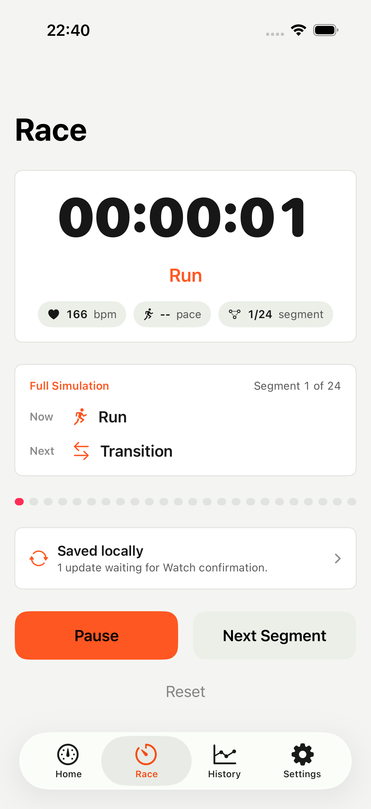
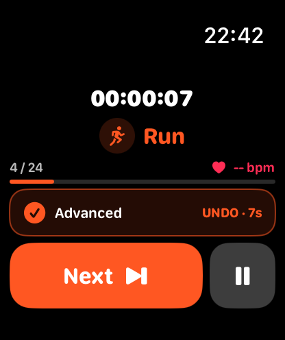
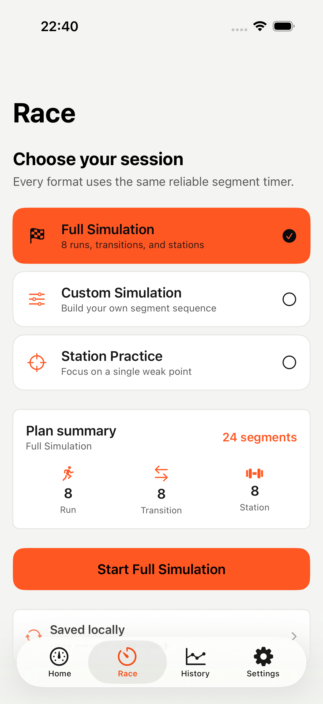
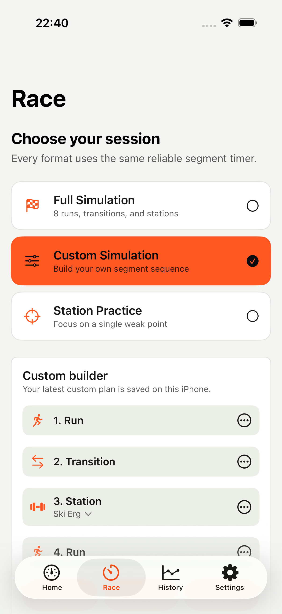
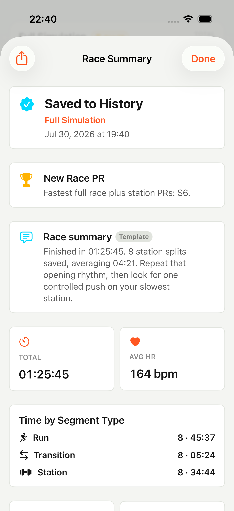
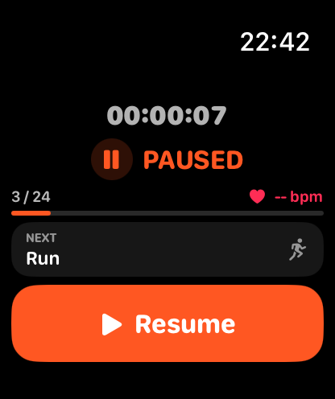
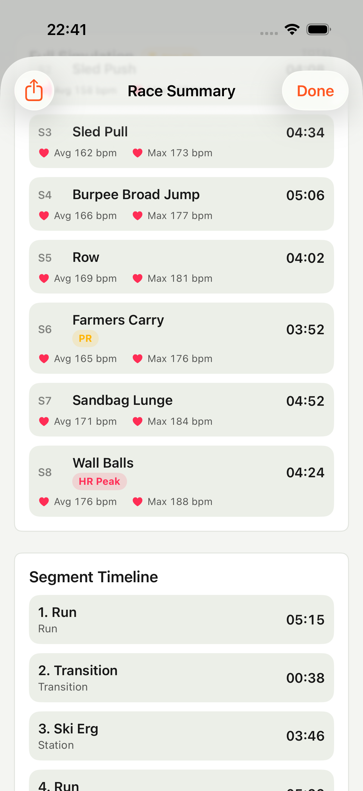

01
Complete race flow
Full Simulation
Follow 8 runs, 8 transitions, and 8 stations as one 24-segment sequence.
Time the runs. Own the transitions. Attack the stations. FORX turns a complete functional fitness race into one clear, reliable flow.
Start free · No account required · Health access optional


Three session types
Use one segment engine for a complete simulation, a focused weak-point session, or a plan you build yourself.
Complete race flow
Follow 8 runs, 8 transitions, and 8 stations as one 24-segment sequence.
Focused repetition
Choose one station, set 1–10 attempts, and keep the work centered on a specific weak point.
Your exact sequence
Combine runs, transitions, and stations into a session that matches your training plan.

From start to summary
FORX keeps the current segment, what comes next, and your full result in view—before, during, and after the effort.
Pick a ready-made format or build your own segment sequence.
See Now, Next, elapsed time, segment progress, and the controls that matter.
Your completed session saves automatically to local History.
Break down run, transition, and station time in one summary and timeline.


Apple Watch companion
Start on your wrist, advance the segment, undo a mistake, pause or resume, and finish the session. The Watch is optional; FORX remains fully usable on iPhone.
Designed for fast decisions during the effort, with the active segment and 24-step progress visible at a glance.


A result you can use
Review the complete sequence, compare segment types, see station performance, and carry a better plan into the next session.
See the repeated cost of every running segment.
Make the time between efforts visible and trainable.
Review station splits, personal records, and weak points.
Local-first by design
Race tracking and history work without an account. Health access is optional, and denying it does not block the timer, segment results, or local history.
Current release. Minor internal improvements and refreshed App Store presentation.
View on the App StoreReady when you are
No account required. Available for iPhone and Apple Watch.